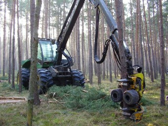
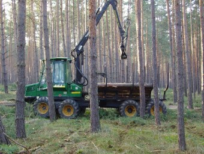

Nachhaltigkeit
Wir wirtschaften so, dass forstliche Interessen und Naturschutz zusammenpassen. Fünf Beispiele aus unserem Betrieb.

Neben unserer wirtschaftlichen Tätigkeit haben wir das Ziel, Natur und Umwelt schonend und rücksichtsvoll zu behandeln. Wirtschaftlichkeit und Naturschutz sind vereinbar.
Beispiele
- Beispiel 1
Aktiver Vogelschutz
In unseren Kiefernbeständen haben wir in den letzten Jahren 120 neue Nistkästen aufgehängt und zwei Vogeltränken gebaut. Das fördert eine artenreiche Vogelwelt. Und die Singvögel reduzieren die Schadinsekten der Kiefer, was die Gefahr größerer Erkrankungen senkt.
- Beispiel 2
Äsung statt Verbiss
Junge Kulturen schützen wir mit Zäunen vor dem Verbiss durch Rehe. Zum Ausgleich haben wir an den Rändern der Waldwege Flächen angelegt und mit Saatgut für die Wildäsung eingesät.
- Beispiel 3
Durchgänge für Wildschweine
Unsere Kulturzäune haben Durchlässe, durch die Wildschweine ins Gatter gelangen, Rehe aber nicht. Wildschweine richten in Kulturen keinen Verbiss an, ihr Lebensraum bleibt erhalten. Und weil sie die Zäune nicht mehr gewaltsam aufbrechen, sinken unsere Reparaturkosten deutlich.
- Beispiel 4
Feuerschutzschneisen
An sinnvollen Stellen haben wir Schneisen angelegt, um die Bestände bei einem Waldbrand zu schützen. Damit sie nicht austrocknen und ihre Schutzfunktion verlieren, sind sie als Dauergrün eingesät, das zugleich Nahrung für die Waldtiere bietet.
- Beispiel 5
Waldumbau
Kiefernmonokulturen unterbauen wir an geeigneten Stellen mit Douglasien und Roteichen. Douglasien wachsen stärker als Kiefern, Roteichen lockern die Nadelbestände auf. Das steigert langfristig den Wert des Waldes und entspricht dem Naturschutzgedanken.
Das sind nur einige Beispiele dafür, dass wir aus wirtschaftlichen Gründen Maßnahmen ergreifen, die zugleich den Naturschutz fördern.
Kaum ein Material ist so vielseitig
Die technischen und gestalterischen Eigenschaften von Holz sind hervorragend. Es gibt kaum einen zweiten Werkstoff, der sich so vielseitig im Haus, am Haus und rund ums Haus einsetzen lässt.



Holz direkt aus dem Wald
Ob ein Raummeter Kaminholz, Bohlen nach Maß oder ganze Lkw-Ladungen Rundholz: rufen Sie uns an, wir beraten Sie gern.
Kontakt aufnehmen